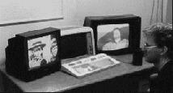

(engl. Ganzfeld). Ganzfeld on saksaa ja tarkoittaa ”koko kenttää”. Sillä viitataan 1970-luvulla käyttöön otettuun parapsykologiseen tutkimusmenetelmään, jolla voidaan tutkia telepatiaa.
Ganzfeld-kokeen kulku on yleensä seuraavanlainen. Vastaanottaja asettuu tuoliin. Hänen korvilleen asetetaan kuulokkeet, joista kuuluu aluksi rentouttavia suggestioita ja tämän jälkeen tasaista kohinaa eli ns. valkoista ääntä. Koehenkilön silmät peitetään puolestaan esimerkiksi pingis-pallojen puolikkailla. Hämärää huonetta, johon vastaanottaja jätetään yksin, valaisee ainoastaan punainen valo. Tällaisen aistideprivaation tarkoituksena on saada tehokkaammin esille heikotkin telepaattiset ärsykkeet, joita muualla oleskeleva koehenkilö lähettää.

Suggestioiden sekä aistideprivaation myötä vastaanottaja vaipuu omiin ajatuksiinsa, joista hänen tulee kertoa ääneen. Kertomukset kokemuksista nauhoitetaan. Toisaalla sijaitseva lähettäjä keskittyy samanaikaisesti satunnaisesti valittuun kuvaan tai filminpätkään.
Lähettämisen loputtua vastaanottajalle esitetään neljä kuvaa. Häntä pyydetään arvioimaan kuinka hyvin kukin kuva vastaa aistideprivaation aikaisia kokemuksia. Luonnollisestikaan hänelle ei kerrota, mikä kuvista on oikea. Jos vastaanottaja kertoo oikean kuvan vastaavan parhaiten hänen kokemuksiaan, kyseessä on ”osuma”. Kun valinnanmahdollisuuksia on neljä, sattuman perusteella olisi odotettavissa, että joka neljäs (25%) vastaus olisi osuma. Jos osumien lukumäärä ylittää sattumalta oletetun määrän, katsotaan tutkimustulosten tukevan telepatian olemassaoloa.
Vuonna 1985 yhdysvaltalainen psykologi Ray Hyman julkaisi Journal of Parapsychology -lehdessä katsauksen, joka käsitteli siihen mennessä tehtyjä ganzfeld-tutkimuksia. Hymanin mukaan tutkimustulokset todellakin poikkesivat merkittävästi sattumasta, mikä viittaisi telepatia-ilmiön olemassaoloon. Poikkeamia kuitenkin selittivät hänen mielestään vakavat tutkimusmenetelmälliset puutteet. Hän havaitsi, että mitä paremman tuloksen tutkimus antoi, sitä heikompi se oli menetelmällisesti.
Hymanille osoittamassaan vastineessa merkittävä englantilainen ganzfeld-tutkija Charles Honorton myönsi, etteivät tutkimukset olleet täydellisiä, mutta silti hän uskoi niiden kertovan telepatian olemassaolosta. Keskustelu kulminoitui yhteiseen julkaisuun, jossa Hyman ja Honorton määrittelivät, miten tiukemmin kontrolloituja ganzfeld-tutkimuksia tulisi tehdä. He myös toivoivat, että tutkimuksia tekisi laajempi tutkijajoukko.
Tietokoneidenkin kehitys toi uutta ganzfeld-tutkimukseen: syntyi autoganzfeld. Siinä kaikki toiminnot ärsykkeiden satunnaistamisesta koehenkilöiden arviointeihin tehdään mahdollisimman pitkälle tietokoneen avulla. Näin kokeen johtajan subjektiivinen vaikutus tutkimustulokseen pienenee.
Ganzfeld-tutkimus sai pahan kolauksen, kun Honorton kuoli 1992. Arvostetussa Psychological Bulletin -lehdessä julkaistiin kuitenkin vielä hänen ja psykologi Daryl J. Bemin meta-analyysi. Sitä varten he olivat koonneet yhteen useita Honortonin tekemiä autoganzfeld-tutkimuksia ja totesivat osumatarkkuudeksi 35%.
Lisäksi Bem ja Honorton kertoivat, että oikeita vastauksia saatiin enemmän filmeillä kuin staattisilla valokuvilla. Vastaanottajat, joilla oli paranormaaleja kokemuksia tai jotka harrastivat esimerkiksi meditaatiota tai joogaa, saivat tutkijoiden mukaan tavallista enemmän osumia.
Tuloksista huolimatta Bem ja Honorton eivät väittäneet telepatian tulleen kiistattomasti todistetuksi. He kuitenkin toivoivat, että tutkimustulokset olivat tarpeeksi mielenkiintoisia, jotta muut tutkijat yrittäisivät toistaa ne.
Kiinnostusta Bemin ja Honortonin tulokset todellakin herättivät. Vuonna 1999 englantilaiset psykologit Julie Milton ja Richard Wiseman julkaisivat meta-analyysin uusista autoganzfeld-tutkimuksista. Niitä oli tehty kaikkiaan 30 seitsemässä eri laboratoriossa, ja tulokset oli julkaistu neljässätoista lehdessä kymmenen eri päätutkijan nimissä. Yksittäisiä kokeita oli tehty yhteensä 1 198.
Miltonin ja Wisemanin johtopäätös on armoton: ”laajempi tutkijajoukko ei ole kyennyt toistamaan autoganzfeld-tuloksia”. Uudet tutkimukset eivät esimerkiksi pystyneet toistamaan Bemin ja Honortonin tuloksia, joiden mukaan filmi on staattista ärsykettä parempi tai että aikaisemmin paranormaaneja ilmiöitä kokeneet osuisivat muita useammin oikeaan.
Analyysissään Milton ja Wiseman toteavat, etteivät mittavan uuden aineiston tulokset merkittävästi poikkea sattumasta. Toisin sanoen autoganzfeld-tutkimukset eivät osoita telepatian olemassaoloa, vieläkään.
Katso: Honorton, Charles; Parapsykologia.
Kirjallisuutta: Bem 1994; Bem ja Honorton 1994; Blackmore 1994; Hyman 1993, 1994; Häkkinen 2000; Kaitaro 1997; Lilienfeld 1999a; Milton ja Wiseman 1999, 2001; Wunder 1998.